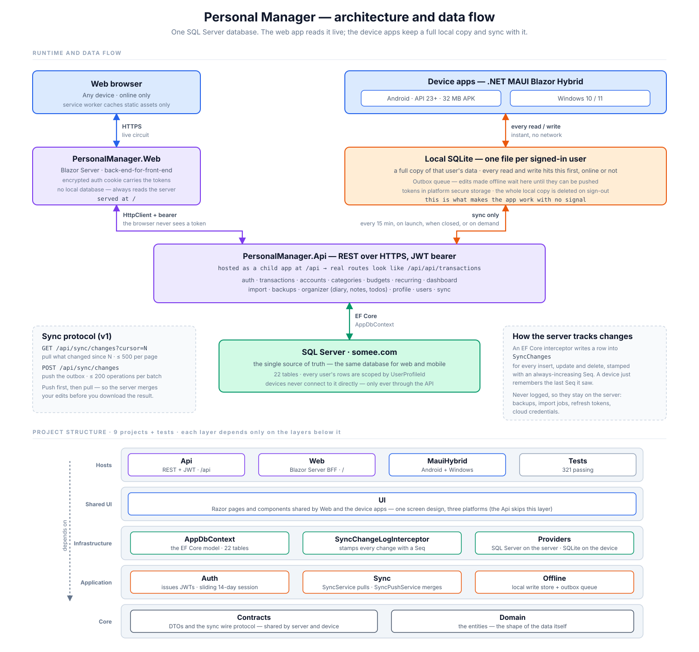
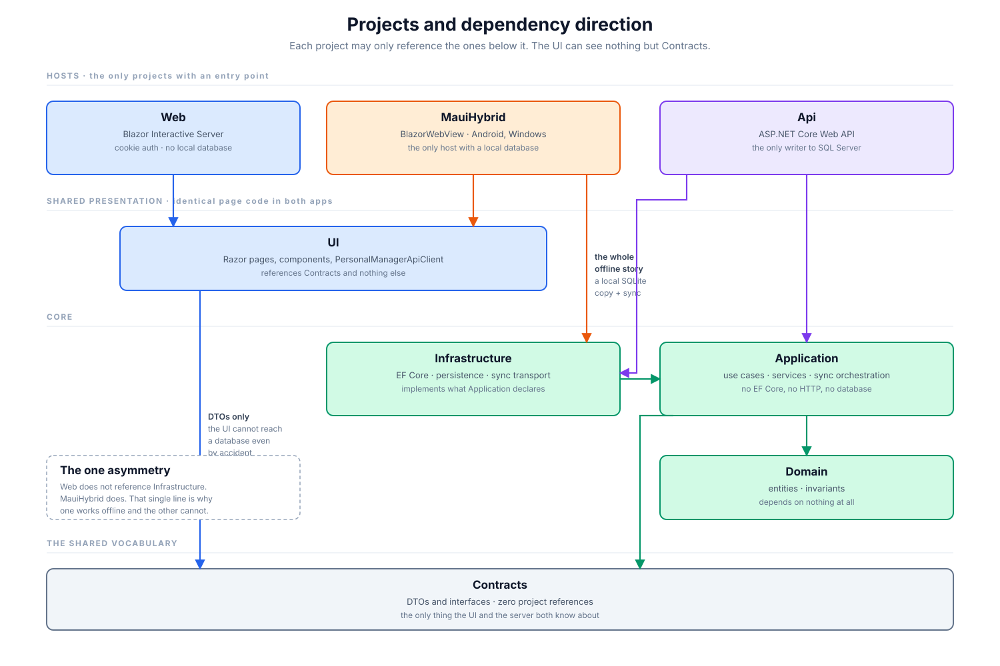
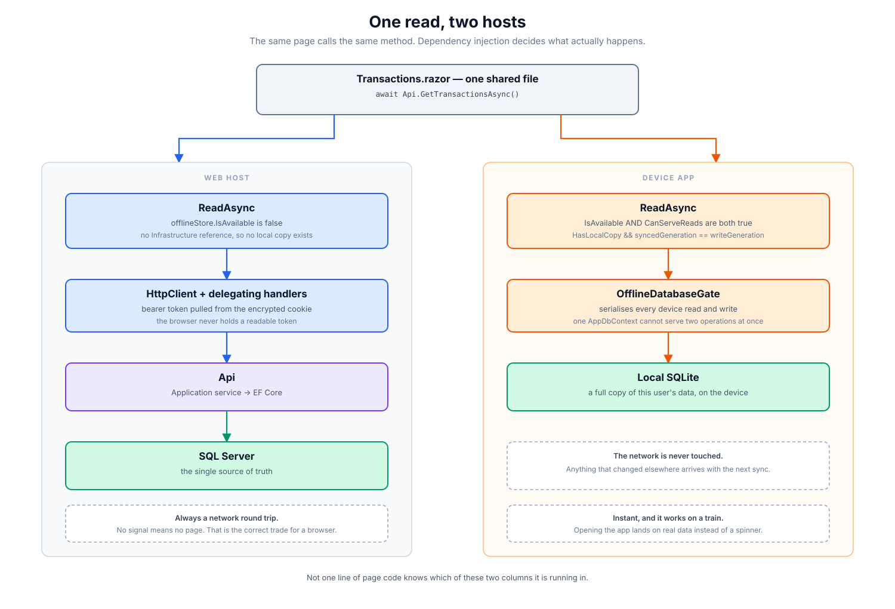
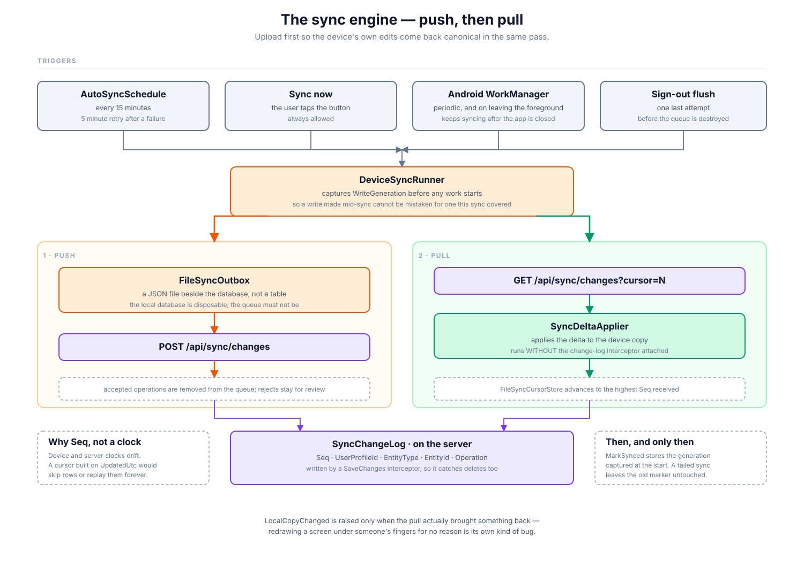

Personal Manager
A self-hosted income & expense manager with an offline-capable device app, a credential vault and a personal organizer.
- .NET 10
- ASP.NET Core
- Blazor Interactive Server
- .NET MAUI Blazor Hybrid
- EF Core 10
- SQL Server
- SQLCipher
- xUnit
Built as one .NET solution where the web app, the device app and the API share the same domain, the same Razor UI and the same database schema. A screen is written once and appears in both hosts. The device app keeps a complete encrypted local replica, so it works with no network at all and reconciles with the server when one is available.
This page is a public overview of the project. The source repository is private — see Source and licence below.
Three hosts, one codebase
| Host | What it is | Runs on |
|---|---|---|
PersonalManager.Web |
Blazor Interactive Server site, installable as a PWA | Any browser |
PersonalManager.MauiHybrid |
.NET MAUI Blazor Hybrid app with its own encrypted local database | Android, Windows |
PersonalManager.Api |
JWT-authenticated HTTP API and background backup host | IIS / Kestrel / shared hosting |

What it does
Finance
- Transactions — income and expense ledger with filtering, tagging, server-side paging and bulk operations.
- Accounts and transfers — multiple accounts with running balances; account-to-account movement is kept separate from income and expense so it never distorts totals.
- Categories, tags and budgets — hierarchical categorisation with per-category reporting, budget progress and overspend signalling.
- Recurring rules — templates that generate scheduled transactions.
- Dashboard — balances, period comparisons, category movers and insight strips.
- Import —
.xlsximport with a per-row issue collector that reports exactly what failed and why, instead of aborting the whole file. - Export — filtered transaction lists to Excel, and to a PDF statement with letterhead.
Organizer workspace
A diary, notes and task manager living beside the finance screens, sharing the same account. Every tab is its own bookmarkable URL.
| Section | Contains |
|---|---|
| Today | Overdue work, tasks due today, today's notes and diary |
| Notes | Active / Pinned / Archive / Recycle bin |
| Diary | Active / Drafts / Favorites / Archive / Recycle bin |
| Tasks | Upcoming, Overdue, Recurring, Completed, Archived, All — list or calendar view |
Credential vault
Cards, bank logins, website logins and secure notes, encrypted with a passphrase separate from the account password — the app cannot read any of it until that passphrase is entered. Supports custom fields, per-field secret masking, security question/answer pairs and recovery codes, and works offline on the device app.
Backup and restore
- Full application backups written as AES-256-GCM encrypted archives.
- Scheduled backups run by a hosted service inside the API.
- Optional Google Drive upload over OAuth; the refresh token is encrypted at rest with ASP.NET Core Data Protection.
- Restore with a pre-flight validation pass that reports warnings before anything is written.
Engineering notes
Write once, render twice
The browser host and the native WebView host render the same Razor components from a shared UI project, against the same contracts.
Offline is the default
The device app owns a complete local database and treats the server as a peer it reconciles with — not an online client with a cache.
Strictly inward dependencies
Domain depends on nothing; Application on Domain; Infrastructure and API on Application; the hosts on the shared UI.
Schema changes are a procedure
Migration, then regenerated SQL deployment scripts behind a drift check, then review and targeted migration tests. Nothing is ever auto-applied to a hosted database.


Offline replica and sync
- Every write lands in the local SQLCipher database first, so the app is fully usable with no network.
- Unsent changes queue in an encrypted outbox (AES-256-GCM) beside it.
- Sync runs automatically through a periodic Android
WorkManagerjob — chosen over a timer or an alarm because it is the only scheduler Android keeps across reboots — and on demand from the UI, subject to a configurable network policy. - The server exposes a change feed, so a device can ask "what changed since my last visit", including deletions, rather than re-downloading everything.
- Operation IDs make replays idempotent, so a retried batch cannot double-post.

Security
Five separate encryption layers, frequently confused for one:
| Layer | Protects |
|---|---|
| In transit | API ↔ SQL Server |
| At rest — database | Data and log files, and server backups, via Transparent Data Encryption where the host allows it |
| At rest — app backups | Archives written by the backup feature, including Drive uploads. AES-256-GCM, always on |
| At rest — device replica | The offline copy on the phone or PC and the unsent queue. SQLCipher + AES-256-GCM, per-install key in the platform keystore |
| At rest — vault | Vault records, under a passphrase separate from the account password |
Alongside those:
- JWT access tokens (15 minutes) plus rotating refresh tokens (90 days), stored hashed with a binary collation so lookups are case-exact.
- App lock — PIN with throttling and lockout, plus biometric unlock on Android.
- Security activity trail — sign-ins, refusals, PIN failures and vault exports, queryable per account, with configurable server-side retention.
- Per-endpoint rate limiting, with a tighter allowance for anonymous auth endpoints.
- A Content-Security-Policy built per request, and host-header validation that refuses to start outside Development when left open.
Every configuration file in the repository carries placeholders only. Signing keys, mail passwords and OAuth secrets are supplied through user-secrets locally or environment variables in production, and are never committed.
Tech stack
| Area | Choice |
|---|---|
| Runtime | .NET 10 |
| API | ASP.NET Core, controllers, OpenAPI |
| Web UI | Blazor Interactive Server + PWA |
| Device UI | .NET MAUI Blazor Hybrid — net10.0-android (API 23+) and net10.0-windows10.0.19041.0 |
| Data | EF Core 10 — SQL Server in production, SQLite as a zero-setup dev fallback |
| Device data | SQLCipher (AES-256) local replica, key held in the platform keystore |
| Spreadsheets | ClosedXML |
| PDFsharp-MigraDoc | |
| Auth | JWT bearer + rotating refresh tokens; cookie auth on the Web host |
| Tests | xUnit, Microsoft.AspNetCore.Mvc.Testing, coverlet |
| Packages | Central Package Management with transitive pinning |
iOS and Mac Catalyst targets are deliberately off: the Apple toolchain only builds on macOS, so adding the framework without a Mac breaks the build rather than getting closer to shipping.
Testing and delivery
- 162 test files across 25 areas — accounts, auth, backup, budgets, dashboard, export, import, organizer, persistence, recurring, security, sync, transactions, transfers, vault and more.
- Coverage includes component rendering, real SQLite persistence, full API integration through
WebApplicationFactory, migration application and backup round-trips. - 19 EF Core migrations, with SQL deployment scripts regenerated behind a model/migration drift check.
- Publish, verify and maintenance scripts: server publish with the database scripts that release needs, signed APK build, a post-deploy probe that signs in and checks authenticated routes (an anonymous probe cannot tell the difference, because every path answers 401), and a script that asks Android what sync work is registered and then forces it to run.
Source and licence
The implementation lives in a private repository. This page exists to describe the work and the decisions behind it; it does not distribute the code.
No licence is granted for anything described here. The diagrams on this page are from the project's own design documentation.